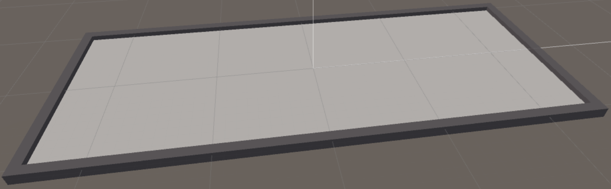
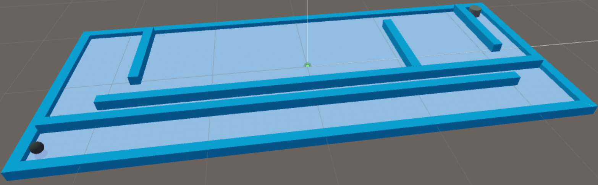
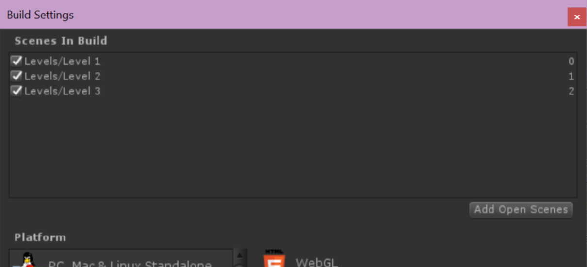
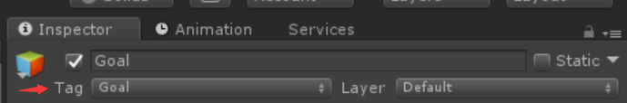

As one of the most popular editor/engine to create games, Unity 3D is really suitable for starters because of simplicity and wide support from the community. If the user run into a problem, there mostly exists more than 3 ways to solve it, and they are all few clicks away just by copying & pasting the error to Google.
Intro
In this series, I would like to take some memo of the tricky steps I met with during the process of creating things. This can be potentially usefully for my own later reference.
In this first post of Unity learning notes series, I would like to talk about making a very simple 2D/3D maze without any extra package, the result is shown below in the embedded WebGL player. I am currently using Unity 2017.4.0f1. Most steps should be identical for Unity 5.
Steps
Create the level using cubes with desired dimensions, or use blender to make a solid 3D model to drag into the Unity editor instead. For the purpose of simplicity, we just use basic shapes provided by Unity this time. After the shape is finished, create an Materials folder under Assets folder, and create a new material for the stage. In my case, I used Legacy Shaders/Diffuse and chose a grey-ish color as the main screen.
Attention: The transform should definitely be taken great care of. In my case, I decided to use the unit of 1.00, and then adjust positions of all objects based on this step. Therefore it will be whole lot easier to mess around will placements or objects, and it will prevent us from getting into wired issues such as player getting stuck in some invisible holes or gaps.
Attention 2: Create an empty and drop all stage related objects into this parent, so we can focus on player, enemy and other stuff.
Attention 3: Never forget to create a material at first, and then it apply to the desired object. Also, modifying the material directly will affect all objects with that material, so if you want to create colorful stages in different levels as I wanted to do, I suggest create materials such as LevelOneStage, LevelTwoStage, etc.

Prepare the player and the goal object. The shape can be arbitrary, however, in order to avoid the problem of rotation, I chose the sphere as my player and give it another material to stand out from the stage.
In this step, we define the movement of the player by attaching a new script called “PlayerMovement.cs” to the player object. We firstly want to make the player ball respond to keyboard input, to roll to the direction when we press down the corresponding arrow key.
1 2 3 4 5 6 7 8 9 10 11 12 13 14
public class PlayerMovement : MonoBehaviour { public float moveSpeed; // Define a force of acceleration when we press down the key. private Vector3 input; // Read the keyboard input. public float maxSpeed; // Define a max speed for the player.
void Update() { var rb = this.GetComponent<Rigidbody>(); // We use rigidbody to handle the physics. input = new Vector3(Input.GetAxis("Horizontal"), 0, Input.GetAxis("Vertical")); // Deliver the raw keyboard input to the vector "input" we defined here. Since we only want the ball to make 2D moves, the y axis is always 0. if (rb.velocity.magnitude < maxSpeed) { rb.AddForce(input * moveSpeed); // Addforce can push the ball to the direction we want. } }
Attention: Don’t forget to attach rigidbody, and (sphere) collider to the object. If there is no rigidbody, the ball can fall straight down through the floor. The collider is necessary for later hit detection.
Attention 2: Since we defined the moveSpeed and maxSpeed as public values, we need to manually type in the desired values we want to user in the Inspector panel before running the scene.
Attention 3: If something is not working, check the Edit - Project Settings - Input to see if key bindings are using “Horizontal” and “Vertical”.
Before continue to write scripts for the goal object, we firstly need to duplicate the whole scene, in my case I named it “Level 1”, as a new scene “Level 2”. Then we modify the stage design of “Level 2” by adding some walls, obstacles, etc.

Then, under File - Build Settings… press the “Add Open Scenes” one by one from the first scene to the last scene. It should be like this:

Then we can start writing the level changing script that change the level for us when the player touches the goal. Open up the “PlayerMovement.cs” we created before, and add the following scripts:
1 2 3 4 5 6 7 8 9 10 11 12
void Update() { ... private void OnTriggerEnter(Collider other) // Called when collided with other colliders. { if (other.transform.tag == "Goal") // If collided with an object with "Goal" tag. { GameManager.CompleteLevel(); // Call the CompleteLevel() function under GameManager. } } ... }
Since we need to call the CompleteLevel() function under GameManager, we need to firstly create an empty object called “GameManager” in the scene, and attach a new script “GameManager.cs” to it.
1 2 3 4 5 6 7 8
public class GameManager : MonoBehaviour { public static int currentLevel = 0; // The first level is essentially Level 0 to Unity, so we start the counter from 0. public static void CompleteLevel() { currentLevel++; // Once the player touches the goal, the level counter plus one, Application.LoadLevel(currentLevel);// and load the next level. } }
Once the scripts are taken care of, we need to add the “Goal” tag to the goal object in the inspector panel.

Voila! Test it out to see if you can switch between stages.